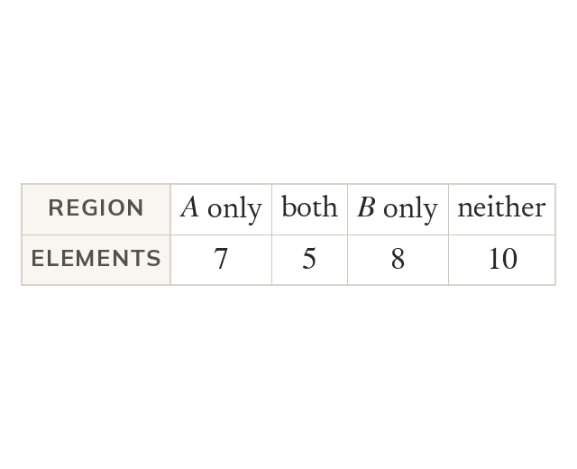

Why the regions can simply be counted
The denominator is always n(ξ), never the size of one circle. The numerator is the count in the region the question names.
A probability is the number of outcomes wanted divided by the number of outcomes possible, and on a Venn diagram both numbers are already written down. The denominator is always n(ξ), the whole universal set, because that is what is possible - never the size of one circle. The numerator is the count in the region the question describes. This works because every element appears exactly once, which is the same rule as last lesson seen from the other side: it is what makes the region counts add up to n(ξ) and stops anything being counted twice.